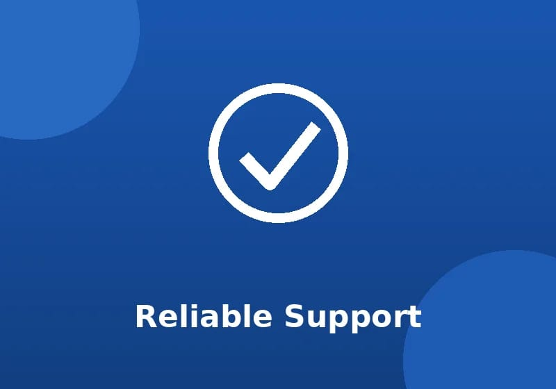

ROSEBANK TECH SUPPORT
Frequently Asked Questions
Find answers to some of the most common technical support questions.

How Can We Help?
Browse the questions below to find a quick solution to your problem.
What should I do if I forget my password?
If you forget your password, use the official password recovery option. If you are still unable to access your account, contact Rosebank Tech Support for assistance.
What should I do if my Wi-Fi is not working?
First, check that Wi-Fi is turned on and that your device is connected to the correct network. Try disconnecting and reconnecting. If the problem continues, contact our support team.
How do I request technical support?
You can request technical support by visiting our Contact or Enquiry page and completing the support form.
What information should I provide when reporting a problem?
Please provide your name, email address, device information, a description of the problem and any error message that appears.
What services does Rosebank Tech Support provide?
We provide computer support, network support, account and password support, email support, software support and student technology support.
What are the support hours?
Our standard support hours are Monday to Friday, from 08:00 to 17:00.
How long does it take to receive a response?
We aim to respond to support requests as quickly as possible. Response times may depend on the type and urgency of the technical problem.
Can I contact support about software problems?
Yes. Rosebank Tech Support can assist with approved software installation, configuration and basic troubleshooting.